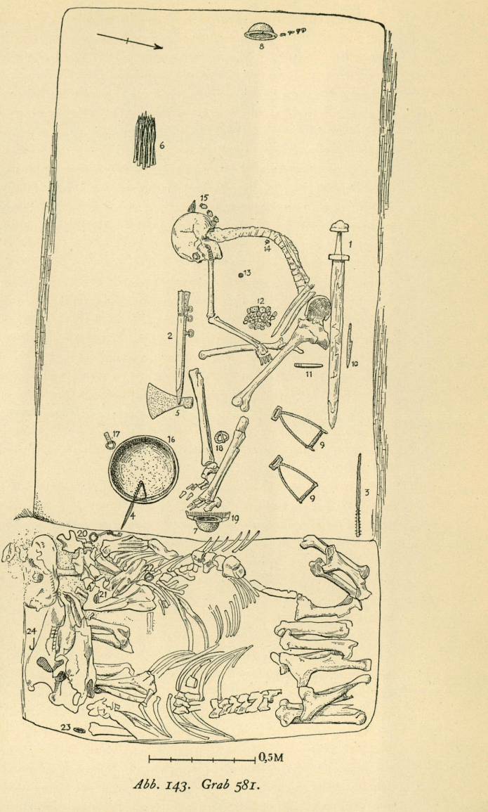

Bj 581 – Kammergrab Birka (»Birka-Kriegerin«)¶
Informationen
- Grab-ID
- Bj 581
- Fundort
- Birka – Insel Björkö, Mälarsee, Uppland, Schweden
- Gräberfeld
- am äußersten Rand des Gräberfeldes, außerhalb des nördlichen Wallburgtors, an der Straße von der Wallburg in die Stadt; nach Price et al. 2019 das westlichste Grab Birkas, hoch auf einem Felsvorsprung, ursprünglich durch einen großen Findling markiert
- Land
- Schweden
- Grabtyp
- Skelettgrab, gezimmerte Kammer mit Absatz für zwei Pferde
- Maße
- Grube Länge 3,45 m, Breite 1,75 m, Tiefe 1,8 m; im W-Teil eine gezimmerte Kammer, Länge 2,35 m; östlich davon ein Absatz für zwei Pferde, 0,6 m über dem Boden (Arbman)
- Bedeckung
- mit großen Steinen bedeckt; an der Oberfläche nur als schwache Senkung sichtbar (Arbman)
- Orientierung
- W+13°S – O+13°N
- Datierung
- Wikingerzeit, 10. Jh.; samanidischer Dirhem (Nasr ibn Ahmad, geprägt 913–933 n. Chr.) als terminus post quem (Arbman 1943)
- Bestattete
- 1 Person (osteologisch/aDNA weiblich; von Arbman 1943 als Mann gedeutet), 2 Pferde
- Skelett
- eine Person (nach Arbman „wahrscheinlich in sitzender Stellung beigesetzt") sowie zwei Pferde, ziemlich gut erhalten; eines der Pferde für den Ritt aufgezäumt (Price et al. 2019)
- Geschlechtsbestimmung
- Arbman 1943 deutete die Person als Mann; die genomische Analyse (Hedenstierna-Jonson et al. 2017; bekräftigt in Price et al. 2019) ergab zwei X-Chromosomen → biologisch weiblich
- Ausgräber
- Hjalmar Stolpe
- Ausgrabungsjahr
- 1878
- Publikation
- Holger Arbman, Birka I: Die Gräber (1943), Grab 581, Abb. 143 (S. 188–190); Tafeln im Tafelband (1940)
- Aufbewahrung
- Statens Historiska Museum (SHM), Stockholm
Bj 581 ist eines der bekanntesten und am heftigsten diskutierten wikingerzeitlichen Gräber. Das reich mit Waffen ausgestattete Kammergrab galt seit seiner Ausgrabung 1878 rund 140 Jahre als Grab eines hochrangigen Kriegers; eine 2017 publizierte aDNA-Analyse wies die bestattete Person als biologisch weiblich aus, was die Debatte um Kriegerinnen der Wikingerzeit neu entfachte (siehe Price et al. 2019).
Grabinformationen¶
Daten überwiegend aus Arbman 1943 (Grab 581, S. 188–190, Abb. 143); Deutung/aDNA aus Price et al. 2019.
Grabplan (Arbman 1943, Abb. 143)¶

Bedeutung¶
Nach Price et al. 2019 enthielten von den über 1.100 ausgegrabenen Birka-Gräbern nur 75 eine oder mehrere Angriffswaffen; Bj 581 ist eines von nur zwei Gräbern der Insel mit einer vollständigen Waffenausstattung und zählt zu den 20 reichsten Gräbern des Platzes (dort zitiert: Thålin-Bergman 1986; Ringstedt 1997). Die Ausstattung — Schwert, Axt, Hiebmesser, zwei Lanzen, zwei Schilde, rund 25 panzerbrechende Pfeilspitzen sowie zwei Pferde (eines aufgezäumt) — spricht für einen professionellen, wahrscheinlich berittenen Kämpfer. Häusliche Beigaben (Werkzeug, landwirtschaftliches Gerät) fehlen (Price et al. 2019).
Das vollständige Spielset mit Brett (Spielsteine im Schoß, Brett daneben aufgestellt) gilt als zusätzlicher Hinweis auf eine mögliche Kommando-/Führungsrolle; solche Sets treten bevorzugt in Gräbern militärischer Anführer auf (Price et al. 2019). Die Tracht mit Details der eurasischen Steppe und die silberverzierte, quastenbesetzte Kappe (nach Vlasatý 2014 wohl seiden, Granulation deutet auf Kiewer Herkunft) unterstreichen den hohen Status.
Fundinventar (nach Arbman 1943, Grab 581)¶
Die folgende Liste gibt die Beigaben so wieder, wie Arbman 1943 sie beschreibt, mit den
dort verwendeten Inventarnummern (Format 143:NR) und Tafelreferenzen. Mehrere Gegenstände
sind laut Arbman heute nicht mehr identifizierbar.
Waffen¶
- Eisenschwert (143:1) – im Museum nicht mehr vorhanden
- Hiebmesser (143:2), Taf. 6:1 (nach einer Zeichnung von O. Sörling), stark beschädigt; durchbrochene, weißmetallbelegte Bronzebeschläge, Verzierung in Tremolierstich, Ortband Taf. 6:7; Länge mit Scheide etwa 51 cm
- Speerspitze (143:3), Typus Taf. 7:5, stark beschädigt, Tülle mit 9 durchgehenden Bronze-Quernieten; Länge 42,6 cm (Spitze abgebrochen)
- Speerspitze (143:4), Taf. 7:8, Länge 34 cm, Blattbreite 1,9 cm, Dicke 0,9 cm; stand in der Bronzeschüssel; Tülle mit 8 Bronzenieten, Verzierung aus eingehämmerten, gezwirnten Silber-/Kupferfäden („Tannenzweigmuster", Taf. 9:3)
- Eisenaxt (143:5), Typus Taf. 14:5, stark beschädigt, Länge etwa 20 cm, Schneidelänge etwa 17 cm
- 25 Pfeilspitzen (143:6), Taf. 12:7, alle vom selben Typus, dreiseitiger Querschnitt, Schaftenden mit feinen Silberfäden umwickelt, Länge etwa 13–15 cm
- 2 Schildbuckel aus Eisen (143:7 und 143:8), Taf. 16:5–6, Durchm. etwa 13,5 und 15,5 cm, Höhe etwa 6 cm; beide schräg stehend (Schilde aufgerichtet ins Grab gebracht), je mit 4 Nägeln am Schild befestigt (Holzdicke eines Schildes 0,8 cm); beim westlichen Buckel Eisenbeschläge (möglicherweise Randbeschläge wie Taf. 18:3) – eigener Fundeintrag: Schildbuckel_Bj581_Birka
- Eisenmesser (143:10) – im Museum nicht mehr vorhanden
Reitausstattung / Pferde¶
- 2 Steigbügel (143:9), Taf. 37:2, mit gerundeter Innenseite, rostbeschädigt, Länge 22,2 und 23 cm
- Pferdezaumzeug (143:20–21), vgl. Taf. 25: zwei stark verrostete Trensen mit Ringen (eine in der Kammer, die andere im Gebiss des östlichen Pferdeskeletts) sowie viereckige Beschläge
- Eisenring (143:23), Durchm. 6,1 cm; 4 eiserne Pferdeeisnägel, Länge 3,1–3,3 cm
- Eisenhaken (143:24), stark verrostet, Taf. 31:3, Länge 9,3 cm
- Eisenring mit Beschlag(?) (143:22), nur Fragmente
Spielset¶
- 28 Spielsteine aus Horn (143:12), Taf. 147:3, einer mit durchgehendem Bleikern, 6 mit kleiner Spitze, die meisten stark beschädigt, Durchm. 2–2,6 cm, Höhe etwa 1,6–1,8 cm
- 3 Würfel aus Rosenstock von Hirschgeweih, Taf. 147:3, stark beschädigt (einer 2,8 × 2,4 × 2,4 cm, zwei 3,1 × 2,4 × 2,3 cm), Augen aus konzentrischen Kreisen
- Eiserne Eckbeschläge eines Spielbretts (Typus Taf. 146, 1,5 cm breit) samt Eisenstiften mit gewölbten Köpfen, südlich des Hiebmessers gefunden (Stolpes Grabplan: „übersät mit Eisenresten")
Sonstige Beigaben¶
- 3 Gewichte (bei den Spielsteinen): ein kubisches aus Bronze mit abgeschnittenen Ecken und 4 Kreisen (Taf. 127:10, Durchm. 0,8 cm), eines aus Eisen mit Bronzeblechüberzug (Durchm. 1,5 cm), das dritte nicht mehr vorhanden
- Viertel einer arabischen Silbermünze (143:13), Taf. 140:2, samanidischer Dirhem für Nasr ibn Ahmad unter dem Kalifen al-Muktadir (301–320 n. H. = 913–933 n. Chr.)
- Ringspange oder -nadel aus Eisen (143:14), vgl. Taf. 45:3, fazettierte Enden, Nadel fehlt, 4,8 × 4,4 cm
- Silberbeschlag einer Kappe (143:15), Taf. 94:1, spitz, mit Granulation und anhaftenden Seidenresten, dazu 4 pflaumenförmige Silberanhänger – alle 5 zu einer Kappe gehörig (siehe Birka III, S. 163)
- Grauer Schieferwetzstein (143:11), Taf. 187:7, mit doppelten eingeschliffenen Furchen am oberen Ende, Länge 13,1 cm
- Bronzeschüssel (143:16), Taf. 201:1, beschädigt, Mündungsdurchm. 31–32,5 cm, Höhe 10,3 cm, getriebene Arbeit, an 6 Stellen mit Bronzeblechen repariert
- Eisenring mit viereckigem Riemenbeschlag (143:17), Ring flach, Durchm. 3 cm; Beschlag 2,8 × 1,6 cm
- Große Eisenschnalle (143:18), Nadel fehlt, Rahmen mit Spuren eingeschmiedeter Metallstäbchen, 7,3 × 6,2 cm
- Hornkamm (143:19), Taf. 162:6, Länge etwa 17 cm, mit Bronzenieten zusammengefügt
- Ohne Fundangabe im selben Bestand: Rahmen einer Bronzeschnalle, ca. 40 Glasspiegel-Fragmente (wie Taf. 195), eine eiserne Miniaturspeerspitze (Taf. 103:17, Länge 5,3 cm), 3 Zinnstifte
aDNA und Deutung¶
- Arbman 1943 und die ältere Forschung deuteten Bj 581 durchgängig als Männergrab eines hochrangigen Kriegers – die Sexung erfolgte anhand der Waffenbeigaben, nicht osteologisch (vgl. Thorshammer_Amulette zur Fehlbarkeit der Beigaben-Sexung).
- Die genomische Analyse (Hedenstierna-Jonson et al. 2017, A female Viking warrior confirmed by genomics, Am. J. Phys. Anthropol. 164) ergab zwei X-Chromosomen – die bestattete Person war biologisch weiblich.
- Price et al. 2019 beantworten die Kritik an dieser Deutung Punkt für Punkt und halten fest: die Integrität des Grabes und die Zuordnung der Knochen sind gesichert. Ob die Frau tatsächlich kämpfte, lässt sich nicht beweisen; die Autoren deuten sie als Frau, die als professionelle Kriegerin lebte, betonen aber die Grenze zwischen sozialer Rolle und tatsächlicher Kampfteilnahme.
Verknüpfte Funde¶
| Fund | Arbman-Nr. | Eintrag |
|---|---|---|
| 2 Schildbuckel aus Eisen | 143:7 / 143:8 | Schildbuckel_Bj581_Birka |
Weitere Einzelfunde aus Bj 581 können bei Bedarf als eigene Fundbelegeinträge unter
Wissen/Kulturgueter/ angelegt und hier verlinkt werden.
Quellennachweise¶
- Arbman_1943_Birka_Graeber – Holger Arbman, Birka I: Die Gräber (1943); primäre Quelle für das oben aufgeführte Inventar (Grab 581, S. 188–190, Grabplan Abb. 143). Volltext liegt im Archiv.
- Price_2019_Bj581_Warrior_Women – Neil Price, Charlotte Hedenstierna-Jonson et al., Viking warrior women? Reassessing Birka chamber grave Bj.581 (Antiquity 93/367, 2019); aDNA, Kontext und Deutung. Volltext + Supplement liegen im Archiv.
- Hedenstierna-Jonson et al. 2017, A female Viking warrior confirmed by genomics (Am. J. Phys. Anthropol. 164) – aDNA-Erstpublikation (kein eigener Eintrag; zitiert in Thorshammer_Amulette und Price_2019_Bj581_Warrior_Women).
- Vlasaty_2014_Kopfbedeckungen – zur silberverzierten Kappe aus Bj 581 (Granulation, Kiewer Herkunft).
- Vlasaty_2021_Schildbuckel – Maße/Typologie der beiden Schildbuckel aus Bj 581 (Typ R562, 6,0 cm hoch, Ø 13,5 / 15,5 cm).
- Stolpe_1878_Birka_Grabung – Hjalmar Stolpes Grabungsdokumentation.
Offene Aufgaben / nachzutragen¶
- Einzelne Inventarnummern der Bj 581-Funde aus der Online-Sammlung des Statens Historiska Museum recherchieren.
- Gräslund 1980 (Birka IV: The Burial Customs, S. 27–42) und Arwidsson 1986 (Waffenaufsätze) für die vertiefte Analyse konsultieren.